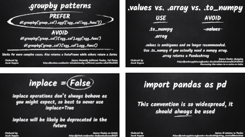

pandas in black and white¶


pandas in black and white is an attempt to collect some best tips and how-tos for using pandas into a set of flashcards. The flashcards consist of opinions on syntax, usage, and programming patterns. The project is explictly OPINIONATED, so I don’t expect all tips to fit all situations. If you don’t like something or know of an edge case, start a discussion in the Issues on GitHub.
Background¶
The pandas package is awesome. I started handling scientific data in Python before pandas caught on and…it sucked. Now, I use pandas every day and honestly can’t understand how I did anything without it. As far as I am concerned, Wes McKinney and subsequent pandas maintainers and contributors are miracle workers.
As it has grown though, pandas has developed the rough edges and odd-shaped appendages that you’d expect with any popular, general-use package. The result is that there are often multiple ways to arrive at the same end point, either by employing different methods or different coding styles and there are a number of deprecated or soon-to-be deprecated features that linger in otherwise helpful online tutorials and StackOverflow answers.
This project is my little way of alleviating some of the pain that people experience with pandas.
Inspiration¶
This project was inspired by Ted Petrou’s article Minimally Sufficient Pandas and Chris Albon’s popular Machine Learning Flashcards
Contributing¶
I would love to get submissions and corrections from you. Here’s how:
Open an Issue with a rough idea of what you’d like to work on. You don’t have to wait for formal approval or anything to go ahead, but it will help others know what is being created already.
Make your card(s), keeping in mind the Flashcard elements below.
Submit a PR that contains a high quality image file version of your card.
Flashcard elements¶
I would love to see flashcards in a variety of styles. Be creative if you’d like, or submit something plain if not. All flashcards should have these elements though:
Must be in black and white (or shades thereof)
Title
Clear and concise text and examples, if appropriate
Alternative or non-preferred patterns (“DON’T”, “AVOID”, “NEVER”, etc.), if appropriate
If you are making a flashcard of tips you got from someone else, provide credit and links to external resources
Your name (or GitHub username)